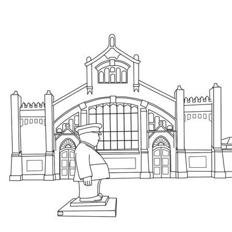

What is the population of Oulu?
About 175 000
About 300 000
About 200 000
Which festival is held annually in Oulu?
Woodstock
RMJ
Qstock
What is the name of the resident ice hockey team in Oulu?
Ässät
Ilves
Kärpät
How big is Oulu to compared to other Finnish cities?
The third largest
The eight largest
The fifth largest
Who founded Oulu in 1605?
Winston Churchill
Martin Luther
King Charles IX
How many times has Oulu burned down?
Seven times
Thirteen times
Ten times
What year University of Oulu is founded?
1967
1984
1958
What is Oulu known of?
Music
Art
Technology
Which year airplane hijacking happened in Oulu?
1999
2004
1987
Oulu airport is the second busiest in Finland after Helsinki-Vantaa Airport, as measured by the number of passengers. How many passengers flew through Oulu airport in 2017?
About 870 000 people
About 1 200 000 people
About 920 000